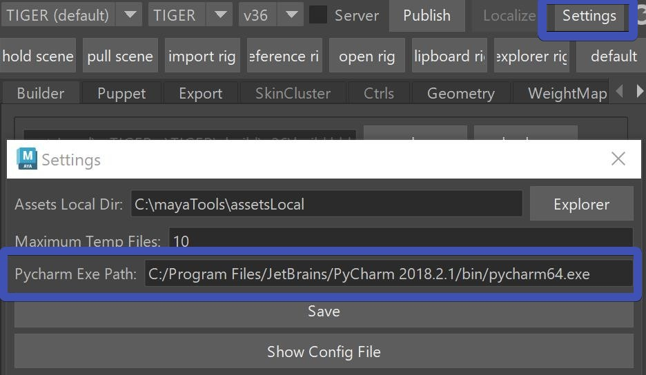
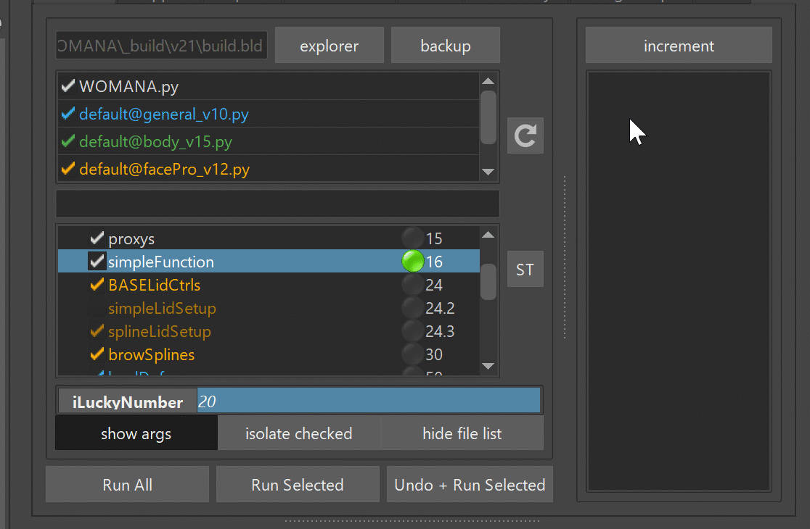

Python I
As you remember from the builder documentations, everything is written in Python. And we can customize a lot
PyCharm
If you have pycharm installed, there's a few quick ways to jump to a specific code.
But for that we have to link it first in the settings,

Note
On Linux this path might look something like this:
/mnt/apps/pycharm/pycharm2023.1.2/bin/pycharm.sh
And then you can go to any function to the builder and with right click quickly jump to the code.

Same thing happens on Errors in the Kangaroo Log - those are links you can just click on

Tip
For most efficiency inside Pycharm add the Kangaroo Tools script folder to the Project Structure.
(In Pycharm: Settings -> Project Structure -> + Add Content Root), and also add the assetsLocal directory.
If that is setup-ed correctly, you can get some things like Auto Correction, or [STRG]+B on a function jumping to its definition.
Known Bug
Sometimes you might notice that he opens pycharm but doesn't go to the file. Or he opens the file but doesn't jump to the line number. To fix that - add the python root folder (In Pycharm: Settings -> Project Structure -> + Add Content Root)
Simple way of adding a Function
The simplest way to add a function is just in the character script. Basically the python file that is
inside your version folder.
It's the file that is shown in white, and it's usually the same name ass your asset.
In there add a function that looks like this:
@builderTools.addToBuild(iOrder=16)
def simpleFunction(iLuckyNumber=20, sObjects=[]):
print ('Hello, your lucky number is %d' % iLuckyNumber)
print ('And the objects are: %s' % sObjects)
And then to get that into the builder, you need to click the  (reload)
button. Basically every time you change any of the scripts, the builder will only know about it if you click that button.
Unless you switch to the character with the upper comboboxes, then he'll reload anyway
(reload)
button. Basically every time you change any of the scripts, the builder will only know about it if you click that button.
Unless you switch to the character with the upper comboboxes, then he'll reload anyway

Remember!
Forgetting to click the reload button is a very common thing with kangaroo beginners. So best write it down ;-)
Now let's look at the function. The important thing is the decorator that starts with @builderTools.add....
If you don't have that, the function won't show up in the Builder.
Do you see the iOrder=16 parameter in the code above? That's the order number where shows up in the
builder. The numbers are listed on the right side of the Function Table. Basically for finding the correct
order number, just look in the table at which place you'd like it to be. If you want the function to run after
the LoadDeformer(), the priority attribute needs to be something higher than 50.

Function Attributes
Now let's run the function with the Run Selected button. It should come to no surprise that when you change
the attribute in the builder, he'll print the sentence with the new number.

Scene Selection
Getting the scene selection into the attributes is quick. On any attribute that is declared with an empty list,
you can do the right click -> Scene Selection option

Buttons
Let's add a button. Change the above code to this.
def buttonFunction():
print ('a button was clicked')
@builderTools.addToBuild(iOrder=16, dButtons={'new button':buttonFunction})
def simpleFunction(iLuckyNumber=20, sObjects=[]):
print ('Hello, your lucky number is %d' % iLuckyNumber)
print ('And the objects are: %s' % sObjects)

Marking Menus
If you want marking menus into the button, you just nest a few dictionaries:
def buttonA():
print ('buttonA was clicked')
def buttonB():
print ('buttonB was clicked')
def buttonC():
print ('buttonC was clicked')
@builderTools.addToBuild(iOrder=16, dButtons={'new button':{'buttonA': buttonA, 'more buttons': {'buttonB':buttonB, 'buttonC':buttonC}}})
def simpleFunction():
pass
Clicking the reload button with this new code, you'll that that super cool looking marking menu. You can even extract the function with that <--> button, which can be very handy if the menu gets complex.

Let the Button change your Attributes
def incrementNumber(iLuckyNumber, _uiArgs={}):
print ('Lucky number is %d' % iLuckyNumber)
iLuckyNumber += 1
_uiArgs['iLuckyNumber'].setText(str(iLuckyNumber))
@builderTools.addToBuild(iOrder=16, dButtons={'increment':incrementNumber})
def simpleFunction(iLuckyNumber=20):
print ('Hello, your lucky number is %d' % iLuckyNumber)
See how the button changes the attribute's value? This is basically what all those fill buttons in kangaroo are doing: 
Logging
While you might be happy enough with the print() function, sometimes it's cool if you can also log into the Kangaroo Log field at the bottom.
import kangarooTools.report as report
report.report.addLogText('Hello World')
The report.addLogText() is more useful for example after you run've the whole thing and you want to go back to the functions and check their logs. You can imagine it'd be a nightmare if in those cases you would have just used the print() function.

Just Buttons
Sometimes you just want to add a few buttons but no function to run in the builder.
def buttonA():
print ('buttonA was clicked')
@builderTools.addToBuild(iOrder=16, bNoCheckbox=True, dButtons={'buttonA':buttonA})
def simpleFunction():
pass
The function then looses its checkbox and gets an italic font.

Yellow Lights
By default the lights are always green if the function finished running and red when it errored. But sometimes you want to signal to the user that even though it didn't error, it wasn't quite without problems. To do that, simply return False.
return False

Progress Bar
Making use of the progressbar at the bottom is easy.
 Just run this code:
Just run this code:
import kangarooTools.report as report
import time
iCount = 100
report.report.resetProgress(iCount)
for i in range(iCount):
report.report.incrementProgress()
time.sleep(0.03)
Progress Bar Window
You can also have this little window you've probably seen on some other tools.

It involes a bit more code though.
And it's best to put some of it into a try block, because otherwise you'll have that annoying window left if your code
errors
import kangarooTools.utilsQt as utilsQt
import time
iCount = 100
qStatusWindow = utilsQt.QStatusWindow('Extra Window')
try:
qStatusWindow.setCount(iCount)
for i in range(iCount):
qStatusWindow.increment()
time.sleep(0.03)
except:
raise
finally:
qStatusWindow.end()
Getting Asset Info
Here are some functions for getting the Current Assets
import kangarooTools.assets as assets
assets.getCurrentAsset() # returns the current asset name
assets.getCurrentProject() # returns the current project name
assets.getCurrentVersionPath() # returns the absolute version folder inside the *_build* folder
Multiple Instances of a Function
One some functions such as the fingerPoses() you can do right click -> set function instant count, and then you'll see the
same function more than once:

By default you don't have that option, but you can turn it on with the bCanGetDuplicated flag:
@builderTools.addToBuild(iOrder=105, dButtons={}, bCanGetDuplicated=True)